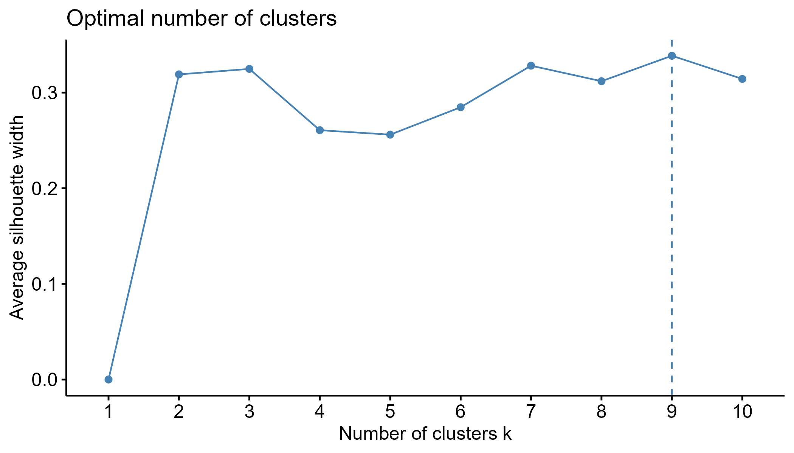
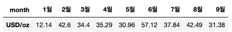
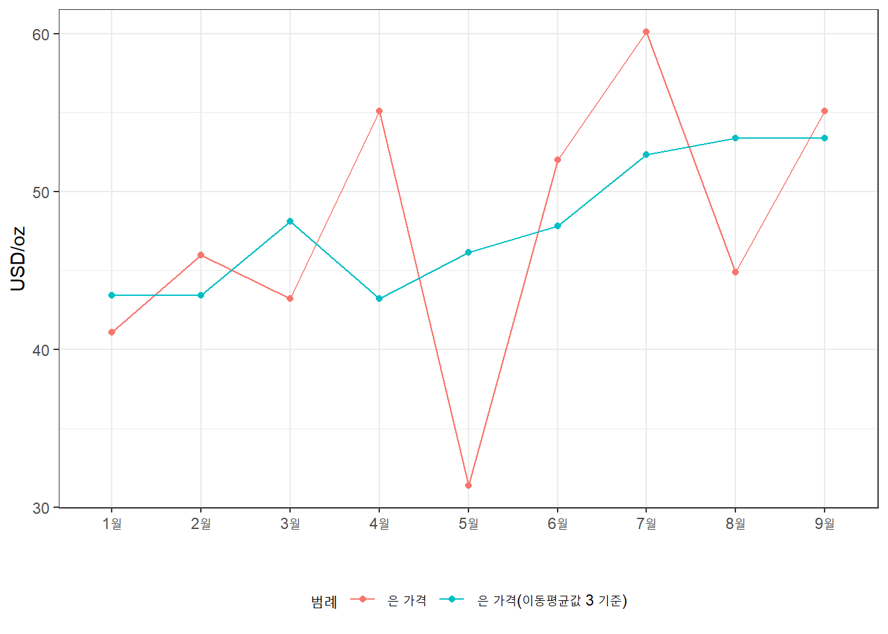

pacman::p_load(tidyverse, tidymodels, data.table, gt, knitr,
skimr, ggcorrplot, themis, solitude)
db_1a <- fread("test/26/problem1.csv") 2 제26회 ADP 실기 문제 풀이
3 1번
3.1 1-1번
결측치를 확인하고 제거하라
필요한 패키지 및 데이터를 불러온다.
skim 함수로 데이터를 먼저 파악한다.
db_1a %>% skimr::skim()| Name | Piped data |
| Number of rows | 35801 |
| Number of columns | 8 |
| Key | NULL |
| _______________________ | |
| Column type frequency: | |
| character | 5 |
| numeric | 3 |
| ________________________ | |
| Group variables | None |
Variable type: character
| skim_variable | n_missing | complete_rate | min | max | empty | n_unique | whitespace |
|---|---|---|---|---|---|---|---|
| InvoiceNo | 0 | 1 | 6 | 7 | 0 | 1846 | 0 |
| StockCode | 0 | 1 | 1 | 7 | 0 | 2668 | 0 |
| Description | 0 | 1 | 6 | 36 | 0 | 2759 | 0 |
| InvoiceDate | 0 | 1 | 13 | 16 | 0 | 1827 | 0 |
| Country | 0 | 1 | 4 | 11 | 0 | 8 | 0 |
Variable type: numeric
| skim_variable | n_missing | complete_rate | mean | sd | p0 | p25 | p50 | p75 | p100 | hist |
|---|---|---|---|---|---|---|---|---|---|---|
| Quantity | 25 | 1 | 18.43 | 42.16 | -480 | 4.00 | 10.00 | 16.00 | 2400.00 | ▇▁▁▁▁ |
| UnitPrice | 97 | 1 | 4.61 | 48.08 | 0 | 1.25 | 1.95 | 3.75 | 4161.06 | ▇▁▁▁▁ |
| CustomerID | 0 | 1 | 13221.82 | 1012.18 | 12354 | 12523.00 | 12681.00 | 14156.00 | 17097.00 | ▇▁▂▁▁ |
데이터는 8개 열과 35,801개 관측치로 구성된다. 8개 열 중 5개는 문자, 3개는 수치형 데이터며, 수치형 데이터에서 결측치가 존재한다. Quantity와 UnitPrice 각각 25개, 97개 결측치를 제거한다.
db_1b <- db_1a %>%
filter(!(is.na(Quantity) | is.na(UnitPrice)))결측치가 제거된 결과를 확인한다.
db_1b %>% complete_rate()[1] 13.2 1-2번
이상치를 제거하는 방법을 설명하고, 이상치를 제거한 후 결과를 통계적으로 나타내라.
이상치는 다음 방법으로 제거할 수 있다:
- 3시그마 원칙: 평균에서 표준편차의 3배 이상 떨어진 값을 제거
- 상자그림: Box Plot에서 상자 위 아래 연장되는 선인 수염을 벗어나는 값 제거; 1.5 * IQR (사분위수 범위)
데이터 분포를 파악하기 위해 먼저 상자그림으로 시각화를 한다. 수치형 중, CustomerID는 개별 소비자의 고유 번호로 제외하고 나머지 두 수치형 데이터를 기준으로 만든다.
db_1b %>% select(Quantity, UnitPrice) %>%
pivot_longer(cols = everything()) %>% # 모든 변수 long 변환
ggplot(aes(x = name, y = value)) +
geom_boxplot() + facet_wrap(name ~ ., scales = "free") +
theme_bw()두 변수의 Box Plot에서 수염을 벗어난 이상치가 보여 이를 제거 한다.
# 이상치 ID 리스트
db_1b <- db_1b %>%
mutate(ID = as.factor(row_number())) # 고유 ID 부여
list_id_outlier <- db_1b %>%
select(ID, Quantity, UnitPrice) %>%
pivot_longer(cols = c(Quantity, UnitPrice)) %>%
group_by(name) %>%
mutate(IQR = quantile(value, 0.75) - quantile(value, 0.25), # 상자 길이
bound_lower = quantile(value, 0.25) - (IQR * 1.5),
bound_upper = quantile(value, 0.75) + (IQR * 1.5)) %>%
ungroup() %>%
filter(!between(value, bound_lower, bound_upper)) %>%
select(ID) %>% pull()
db_1c <- db_1b %>%
filter(!(ID %in% list_id_outlier)) 이상치 제거한 결과를 비교한다.
db_1b %>% select(ID, Quantity, UnitPrice) %>% skim() %>%
filter(skim_type %in% c("numeric")) | Name | Piped data |
| Number of rows | 35679 |
| Number of columns | 3 |
| Key | NULL |
| _______________________ | |
| Column type frequency: | |
| numeric | 2 |
| ________________________ | |
| Group variables | None |
Variable type: numeric
| skim_variable | n_missing | complete_rate | mean | sd | p0 | p25 | p50 | p75 | p100 | hist |
|---|---|---|---|---|---|---|---|---|---|---|
| Quantity | 0 | 1 | 18.44 | 42.2 | -480 | 4.00 | 10.00 | 16.00 | 2400.00 | ▇▁▁▁▁ |
| UnitPrice | 0 | 1 | 4.61 | 48.1 | 0 | 1.25 | 1.95 | 3.75 | 4161.06 | ▇▁▁▁▁ |
db_1c %>% select(ID, Quantity, UnitPrice) %>% skim() %>%
filter(skim_type %in% c("numeric")) | Name | Piped data |
| Number of rows | 27657 |
| Number of columns | 3 |
| Key | NULL |
| _______________________ | |
| Column type frequency: | |
| numeric | 2 |
| ________________________ | |
| Group variables | None |
Variable type: numeric
| skim_variable | n_missing | complete_rate | mean | sd | p0 | p25 | p50 | p75 | p100 | hist |
|---|---|---|---|---|---|---|---|---|---|---|
| Quantity | 0 | 1 | 10.68 | 7.11 | -14 | 6.00 | 10.00 | 12.00 | 34.0 | ▁▃▇▂▁ |
| UnitPrice | 0 | 1 | 2.19 | 1.51 | 0 | 1.25 | 1.65 | 2.95 | 7.5 | ▇▇▂▂▁ |
총 35,679개 관측치 중 27,657개 관측치만이 남았으며, Quantity와 UnitPrice의 극단적인 데이터도 사라졌다. 예를 들어, 전처리 전 데이터의 quantity의 최대값은 2400이지만 이상치 제거 후는 34며, 히스토그램도 극단적이지 않은 정규분포에 가까운 것으로 보인다.
3.3 1-3번
전처리한 데이터로 Kmeans, DBSCANE 등 방법으로 군집을 생성
전처리 과정을 진행한다.
- 추가 전처리 수행
- 수량인 Quantity은 음수 값을 가질 수 없으므로, 0보다 작은 값 제거
- 군집분석에 사용할 변수 선택
- Quantity, UnitPrice, Country 4가지 변수 활용
- InvoiceNo, StockCode, Description, CustomerID는 ID로 적합하지 않음
table(db_1c$Country)
Belgium EIRE France Germany Netherlands Portugal
1688 5623 7013 7849 640 1299
Spain Switzerland
2070 1475 db_1d <- db_1c %>%
filter(Quantity > 0) %>%
# 날짜변수 설정
mutate(InvoiceDate = lubridate::parse_date_time(InvoiceDate, "m/d/y H:M")) %>%
recipe( ~ .) %>%
# 역할 부여
update_role(ID, CustomerID, InvoiceNo, new_role = "ID") %>%
# 요일 처리
# step_date(InvoiceDate, features = c("month")) %>%
# 필요 없는 변수 제거
step_dummy(Country) %>%
step_rm(Description, InvoiceDate, all_string_predictors(), all_datetime()) %>%
# 수치형 데이터 표준화
step_normalize(UnitPrice, Quantity) %>%
prep() %>% juice()군집분석에 필요한 패키지를 불러오고 군집 개수를 구한다. 실루엣 계수로 최적의 개수는 9개지만, 너무 많은 군집 수는 분석 결과 도출에 방해가 될 수 있다고 생각해, 군집 개수를 3개로 진행한다.
pacman::p_load(factoextra)
db_1f <- db_1d %>%
select(-c(InvoiceNo, StockCode, ID, CustomerID))## kmeans 알고리즘에 적용할 군집 개수 구하기
plot_find_k <- fviz_nbclust(db_1f, kmeans)
4 2번
4.1 2-1번
1번에서 생성한 군집 특성을 분석하라.
3개 군집의 평균 특성 정보는 다음과 같다:
- 군집 1은 단가가 비싼 제품을 적게 사는 구매자로, EIRE 비율이 높음
- 군집 2는 중간 단가의 제품을 많이 사는 구매자로, France 비율이 높음
- 군집 3은 단가가 싼 제품을 적정량 구매하고 Netherlands 비율이 낮음
km <- kmeans(db_1f, 3)
km$centers Quantity UnitPrice Country_EIRE Country_France Country_Germany
1 -0.1517417 -0.4490393 0.1779445 0.2770334 0.2891599
2 1.8662197 -0.7177269 0.1950424 0.2533159 0.2828876
3 -0.8472372 1.3414492 0.2566716 0.2183184 0.2527826
Country_Netherlands Country_Portugal Country_Spain Country_Switzerland
1 0.01989816 0.05105186 0.07483586 0.04696503
2 0.04022614 0.04587954 0.05783866 0.07675582
3 0.02105404 0.04224219 0.08958026 0.053104474.2 2-2번
각 군집별로 대표 추천 상품을 도출하라.
각 군집별로 가장 많이 팔린 제품 상위 3개는 다음과 같다.
data.table(cbind(db_1d, cluster = km$cluster))[
, .N, .(cluster, StockCode)][order(cluster, -N)][
, .(toString(.SD[1:3]$StockCode)), .(cluster)] cluster V1
1: 1 22554, 22556, 22629
2: 2 21212, 21121, 23307
3: 3 22326, 22328, 232454.3 2-3번
CustomerID가 12413인 고객을 대상으로 상품을 추천하라.
CustomerID가 12413인 고객의 거래가 어떤 군집에 속하는 지를 파악하니, 군집 1은 12건, 군집 2는 1건, 군집 3은 18건으로 군집 3의 거래건이 많은 것으로 판단된다.
db_1f <- data.table(cbind(db_1d, cluster = km$cluster))[CustomerID %in% 12413][
, .N, cluster][order(-N)]군집 3에 속한 고객이 주로 거래한 물품 중, CustomerId가 12413이 산 물품이 아닌 경우를 추천하면 된다. 군집 3에 속한 사람들이 평균 구매 횟수가 높은 순으로 21790, 22460, 22697 등을 추천할 수 있다.
tb_freq <- data.table(
cbind(db_1d, cluster = km$cluster))[cluster == 3][, .(N = .N / uniqueN(CustomerID)), StockCode][order(-N)]
tb_custm <- data.table(
cbind(db_1d, cluster = km$cluster))[CustomerID %in% 12413][, .N, StockCode][order(-N)]
tb_candi <- tb_freq[tb_custm, on = "StockCode", N_custm := N]
tb_candi %>% head(10) %>% kable()| StockCode | N | N_custm |
|---|---|---|
| 22766 | 4.500000 | NA |
| 21912 | 4.166667 | NA |
| 22835 | 4.000000 | NA |
| 23081 | 4.000000 | NA |
| 72802B | 4.000000 | NA |
| 23099 | 4.000000 | NA |
| 72802C | 4.000000 | NA |
| 21470 | 3.666667 | NA |
| 85048 | 3.500000 | NA |
| 23413 | 3.500000 | NA |
5 3번
철강 제품의 불량률을 조사하고자 한다. 이 때, 불량률의 90%, 추정오차한계가 5% 이내가 되기 위하여 적절한 표본의 크기 중 최소값은 얼마인가?
이 문제는 표본조사를 실시할 때, 불량에 관한 모평균이 90% 신뢰구간에서 추정오차한계가 5% 이내가 되도록하는 최소 표본 크기를 구하는 것이다.
먼저 표준오차(SE)는 표본 평균의 표준 편차로, 모집단의 표준 편차를 표본 크기 제곱(n)으로 나눈 것이다. \[SE = \frac{{\sigma}}{{\sqrt{n}}}\] 여기서 우리는 표준오차(SE)는 모른다. 하지만 단서는 표준오차가 90% 이내 신뢰구간에 속해야 한다. 이를 표준 정규 분포, Z 점수로 표현하면 다음과 같다. \[Z = \frac{{E}}{{SE}}\]
두 식을 결합하면 다음과 같다.\[E = Z \cdot SE = Z \cdot \frac{{\sigma}}{{\sqrt{n}}}\]
여기서 N을 구하는 식으로 바꾸면 다음과 같다. \[n = \frac{{Z^2 \cdot p \cdot (1-p)}}{{E^2}}\]
위 공식을 R을 대입해 쓰면 다음과 같다.
# 변수 정의
confidence_level <- 0.90
margin_of_error <- 0.05
z_score <- qnorm((confidence_level + 1) / 2) # 90% 신뢰수준에 대한 Z 점수 계산
anticipated_proportion <- 0.5 # 불량률 가정
# 표본 크기 계산
sample_size <- (z_score^2 * anticipated_proportion * (1 - anticipated_proportion)) / margin_of_error^2
sample_size <- ceiling(sample_size) # 실제 조사에선 표본 크기를 정수로 취해야 함
print(sample_size)[1] 2716 4번
다음은 1월부터 9월까지의 은의 가격이다 
6.1 4-1번
은의 가격 및 이동평균값이 3으로 설정된 시계열 그래프를 그려라.
db_4a <- tibble(
month = c(paste0(c(1:9), "월")),
usd = c(41.1, 46.0, 43.2, 55.1, 31.4, 52.0, 60.1, 44.9, 55.1))
db_4b <- recipe(month ~ ., data = db_4a) %>%
step_mutate(usd_window3 = usd) %>%
step_window(usd_window3, size = 3) %>%
prep() %>% juice()
db_4b %>% pivot_longer(cols = starts_with("usd")) %>%
mutate(name = factor(name, levels = c("usd", "usd_window3"),
labels = c("은 가격", "은 가격(이동평균값 3 기준)"))) %>%
ggplot(aes(x = month, y = value, color = name, group = name)) +
geom_point() +
geom_line() + theme_bw() +
labs(x = "", y = "USD/oz", color = "범례") +
theme(legend.position = "bottom")
6.2 4-2번
1월 대비 9월의 은 가격은 얼마나 올랐는가?
db_4b_jan <- filter(db_4a, month == "1월")
db_4b_sep <- filter(db_4a, month == "9월")
round(((db_4b_sep$usd - db_4b_jan$usd) / db_4b_jan$usd ) * 100, 2)[1] 34.067 5번
A, B, C 선거거구별 W 의원에 대한 찬성, 반대 지지를 나타낸다. 자치구별 지지율이 같은지에 대해서 검정하라.
db_5a <- tibble(
구분 = c("지지 한다", "지지 안한다"),
선거구_A = c(176, 124),
선거구_B = c(193, 107),
선거구_C = c(159, 141)
)7.1 5-1번
연구가설과 귀무가설을 설정하라.
가설은 다음과 같다:
- 귀무가설: 세 선거구의 W 의원에 대한 지지율은 같다.
- 연구가설: 적어도 하나의 선거구에서 W 의원에 대한 지지율은 다르다.
7.2 5-2번
소수점 2자리 반올림하여 통계량을 구하고 95% 수준에서 연구가설 채택여부를 결정하라.
가설을 검정하기 위한 방법으로는 카이제곱 검정을 활용한다.
db_5b <- chisq.test(db_5a[-1])
cat("검정통계량:", round(db_5b$statistic, 2))검정통계량: 7.95cat("유의수준: ", (round(db_5b$p.value, 2)))유의수준: 0.02분석의 유의 수준은 0.02로 95% 수준인 0.05보다 작아 귀무가설을 기각하게 된다. 따라서, 적어도 하나의 선거구에서 W 의원에 대한 지지율이 다르다는 연구 가설을 수용하게 된다.
8 6번
A초등학교 남학생 16명과 여학생 9명의 혈압을 측정한 problem4.csv 파일을 가지고 남녀학생의 평균 혈압에 차이가 없는지 분석하라. 단, 남학생과 여학생의 혈압 데이터는 정규분포를 따르며 등분산임을 가정한다.
9 6-1번
연구가설과 귀무가설을 설정하라.
가설은 다음과 같다:
- 귀무가설: 남학생과 여학생 집단의 평균 혈압은 같다.
- 귀무가설: 남학생의 평균 혈압과 여학생의 평균 혈압은 다르다.
10 6-2번
통게량을 구하고 연구가설 채택 여부를 기술하라.
남성과 여성, 두 집단 간의 평균 차이가 있는 지는 t-test를 통해 검정할 수 있다.
db_6a <- fread("test/26/problem4.csv")
t.test(db_6a[gender %in% "male"]$pressure, db_6a[!(gender %in% "male")]$pressure, var.equal = TRUE)
Two Sample t-test
data: db_6a[gender %in% "male"]$pressure and db_6a[!(gender %in% "male")]$pressure
t = 1.5983, df = 23, p-value = 0.1236
alternative hypothesis: true difference in means is not equal to 0
95 percent confidence interval:
-1.856072 14.471350
sample estimates:
mean of x mean of y
96.21875 89.91111 일반적인 유의수준 95% 수준에서 볼 때, 해당 검정 결과의 p-value는 0.1236으로 0.05보다 작지 않아, 귀무가설을 채택하므로 남성과 여성 간 평균 혈압 차이는 없으며 연구가설을 채택하지 못한다.
11 6-3번
신뢰구간을 통해서 6-2를 뒷받침하라.
cat(t.test(db_6a[gender %in% "male"]$pressure, db_6a[!(gender %in% "male")]$pressure, var.equal = TRUE)$conf.int)-1.856072 14.47135신뢰구간이 0을 포함해, 해당 추정값의 차이가 통계적으로 유의하지 않다. 즉, 남학생과 여학생의 평균 혈압에 대한 차이가 통계적으로 유의미하지 않다는 결론을 내릴 수 있다.
12 7번
data <- data.frame( height = c(174.396, 179.656, 175.079, 180.804, 177.448), weight = c(72.102, 81.255, 76.207, 81.354, 78.768), waistline = c(79.3787, 80.6649, 80.3166, 80.8794, 80.3499) )